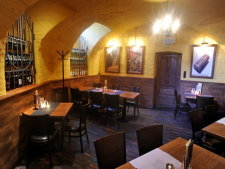

|
|
|
Weinbaugebiet 3
- Szekszárd |
|
|
Szekszárd
ist das Zentrum dieses Weingbaugebietes. Mit 36.000 Einwohnern ist
Szekszárd die kleinste Stadt unter
den Hauptstädten der 16 ungarischen Komitate. Es
gibt hier 4.500 Weinkeller, ein für 8 Einwohner. Der
Stierblutwein ist typisch für diese Gegend, ein
Cuvée aus 3-4 roten Rebsorten, je nach Weinjahr. Kadarka ist
das bestimmende Element im Stierblutwein, tiefrot und geprägt
von miteinander harmonisierenden Düften und fruchtigen
Aromarichtungen.
Fläche:
1.925
Hektar
Die Weinbauregion wird in zwei Weinbaugebiete
gegliedert: Szekszárd
und in die von Szekszárd weiter
entfernt liegenden Gemeinden
Őcsény, Bátaapáti,
Sióagárd.
|
|
|
Bilder
rechts und links:
"Borok Háza" am Garay tér Platz im Zentrum von
Szekszárd
Hier bekommt man die Produkte aus dieser Weinbauregion auch zum
Mitnehmen. |
 |
|
|
Bilder
rechts und links:
Unsere Empfehlung: ""
(=Sächsische Bierstube und Restaurant) am Garay tér
Platz im Zentrum von Szekszárd
|
|
|
|
Die
Sächsische Bierstube verfügt über eine
vorzügliche internationale Küche in einem
hervorragenden gastronomischen Betrieb mit Weinstube (Bild
rechts), einem angeschlossenen Konditoreicafé und
Gästehaus. |
 |
|
Bild
rechts: Der "Weinbrunnen" im Zentrum von Szekszárd vor dem
Landtagsgebäude
Die
Region ist ein Rotwein gebendes
Gebiet. Der natürliche Gerbsäurengehalt der
angebauten
Rotweintraubenarten und die Gärung auf lange Schale sichert
den hohen
Säurengehalt der Rotweine. Außer den massigen,
feurigen, an Alkohol und
Tannin reichen Rotweine erschienen im letzten Jahrzehnt die leichteren
frischen Roseweine. Im Sinne des ungarischen Weingesetzes darf
Szekszárd als einzige Stadt die aus Eger
weltberühmte Marke Bikavér
(Stierblut) ebenfalls benutzen. Auch wenn dies weniger bekannt ist, war
der Begriff Stierblut zwei Jahrhunderte früher bekannt in
Szekszárd,
als in Eger. |
|
Weine aus diesem Anbaugebiet:
Weißweine: Weißweine gibt es hier nur
als
Experiment in der Anbauphase. Die Tafelweine Blaufränkisch,
Kadarka und Schiller werden als Rosé angeboten und Muscat
Ottonel als Perlwein. Von den größeren Weinbauern
wird auch
Chardonnay, Welschriesling und Sauvignon Blanc angeboten.
Rotweine: Pinot
Noir, Blaufränkisch,
Portugieser, Cabernet Franc, Merlot, Stierblut aus
Szekszárd, Kadarka,
Schiller, Cabernet Sauvignon.
Etwa seit 2005 wird Syraz angeboten.
|
Weinbauer,
-wirtschaften und -händler in diesem Weinbaugebiet:
Aliscavin - H-7100
Szekszárd, Epreskert u. 8, Tel: +36 74 416 955
H-7173 Zomba, Schloss Sankt Gaál,
Kastély 83, Tel: +36 74 412 828 oder + 36 74 431 256
Aranyfürt
Mezőgazdasági Szövetkezet -
(früher:
Liszt Pincészet) -
7100 Szekszárd, Rákóczi Ferenc u. 132
Benedek Családi Pince
-
H-7144
Decs,
-
H-7100 Szekszárd, Faluhely dűlő
Borok Háza
-
H-7100 Szekszárd, Rákóczi Ferenc u. 222 Tel: +36 74 416 871
Danubiána
Bt. -
Dózsa
Pince -
Dúzsi
Pince -
- H-7100 Szekszárd, Bor utca 2
Eurobor Kft. -
Ferenc
Vilmos -
Ferenci
Sándor -
Forster
Pince -
-
H-7144 Decs, Szőlőhegy
Gálaker Kft. -
Simontornya, |
Garay
Pince - 7100
Szekszárd, Garay tér 19 >>>>
Schriftlich belegt ist, dass dieser Keller bereits im Jahre 1061
existierte. Benannt wurde der Weinkeller nach dem Dichter
János Garay (1812-1853) aus Szekszárd.
Bemerkenswert: Bis zur
Verstaatlichung Mitte des 20. Jahrhunderts
gehörte die Kellerei den Benediktiner Mönchen, nun
Aliscavin GmbH im Schloss Sankt Gaál in H-7173 Zomba.
Die gesamte Reprivatisierung ist unter besonders
fragwürdigen Umständen gelaufen in diesem Weinbaugebiet -
parteipolitisch einseitig...
Grósz Pince -
|
|
Gyalog
Pincészet -
Halmosi
Pince - Verkauf über Restaurant Háry in H-7100
Szekszárd, Kadarka utca 100, Tel: +36 74 416 982
-
7101 Szekszárd, Ivánvölgyi tető
Karácsonyi
József -
Kossuth Mezőgazdasági
Szövetkezet -
Margit
Pince -
Márkvárt
Pince -
Mauther
Pince -
Mészáros
Miklós -
Mészáros
Pince -
Ótos
Pincészet -
Probus
Borház -
Restaurant Háry in H-7100 Szekszárd, Kadarka utca 100, Tel:
+36 74 416 982 hier bekommt man die Produkte von vielen kleineren
Kellereien aus
dieser Gegend
Ribling
Pince -
Sárosdi
Pince -
-
7100 Szekszárd, Kalász
utca 26
Szekszárdi
Szőlősgazdák Borszaküzlete -
-
7173 Zomba,
Szentgálszölöhegy 83
Takler Pince -
Tüske
Pince -
Vestergomi
Pince -
-
7100 Szekszárd, Napfény utca 27-A
kostenlose Anmeldung >>>
|
 |
Touristik: eine
weniger
erschlossene Region ca. 150 km südlich von Budapest |
|
| |
| |
|
Ungarn-Tourist Team

|
| |
| |
|